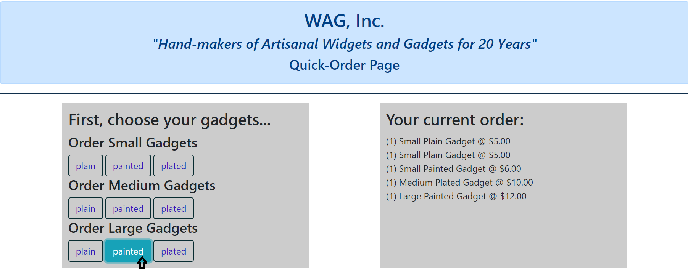
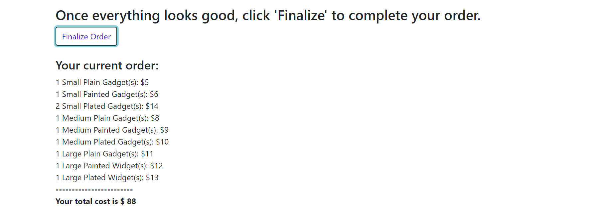
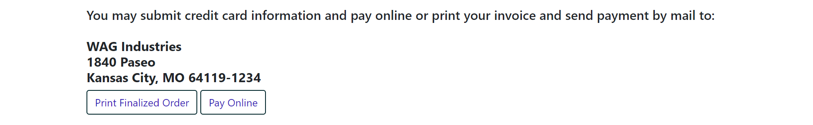

This widg_simple repository contains my first project for the 2018/2019 'Developing Web Applications with JavaScript' course. It's a simple, one-page shopping cart application that allows the user to select items, add them to an online shopping cart, remove items/clear the entire order, and finalize the order/receive a mock invoice.
The user starts with an empty order. Items are added to the order by clicking the corresponding
item button.

Items can be deleted from the order individually or the entire order can be cleared at one
fell swoop.
The order is finalized and a simple invoice summarizing the order and giving a total is
generated. The user can go back and continue editing the order at this point; re-finalizing
the order generated an updated invoice.

At the end of the process, the user has the option to print and mail the invoice with
payment (it's 1998 at WAG Industries) or submit credit card information on a dummy
form.

In retrospect, and with several weeks more of the course under my belt, there are a number of things I would do differently now, among them:
----------------------------
Mary Crosson
maryrcrosson@gmail.com
25 FEB 2019